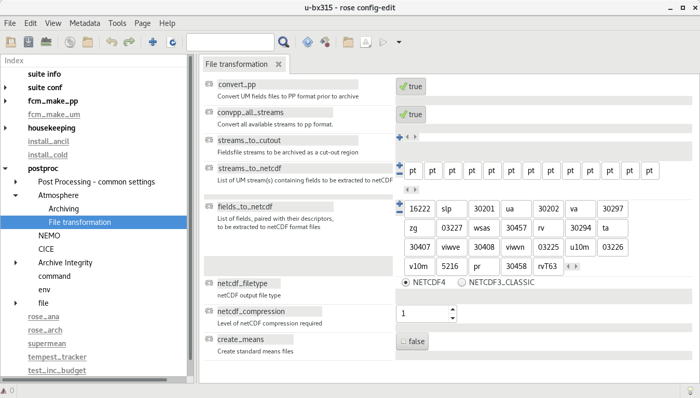
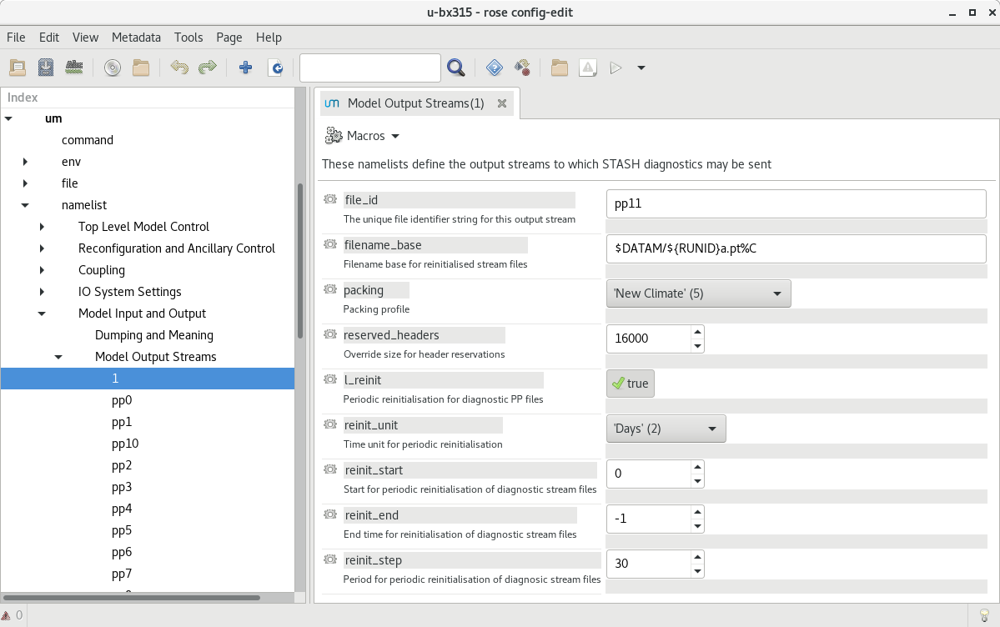
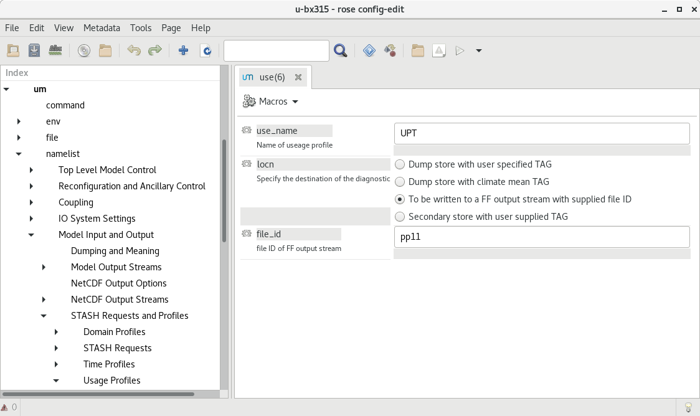
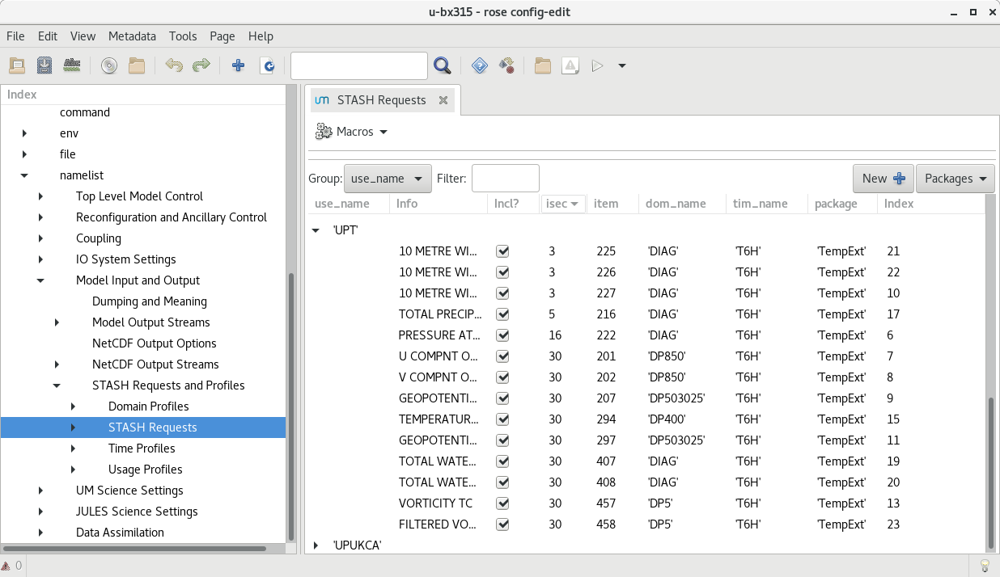

Interfaces
Input Files
The tracking requires netCDF files. These are currently being produced by the UM’s postproc task. The following images show how these have been configured in rose edit. Example namelists to add to Rose configuration files will be added to this repository in the future.
In the Model Output Streams then the reinit_step value of the netCDF stream must equal the resubmission period EXPT_RESUB defined in rose-app.conf so that the netCDF files are available to the tracking task when the subsequent postproc task has completed.
  In this configuration, files are saved in the $DATAM directory.
The str names of these files must correspond to those of the variables_input in the rose-app.conf.
The path that the tracking uses to read these files is configured in the input_directory value in rose-app.conf.
The input netCDF files are not currently archived, but can be deleted after the processing has been run via logical delete_source value in the rose-app.conf.
Environment Variables
The Python code requires the following environment variables to be set:
Name |
Description |
|---|---|
CYLC_TASK_CYCLE_TIME |
The Cylc task cycle (current) time |
RUNID |
The UM RUNID (e.g. cb196) |
SUITEID |
The UM SUITEID (e.g. u-cb196) |
TIME_CYCLE |
The current cylc CYCLE time |
PREVIOUS_CYCLE |
The previous cylc CYCLE time |
NEXT_CYCLE |
The next cylc CYCLE time |
STARTDATE |
The start date for this cycle |
ENDDATE |
The end date for this cycle |
LASTCYCLE |
The date for the last cycle |
IS_LAST_CYCLE |
Logical, is this the last cycle of the simulation |
MPLBACKEND |
The matplotlib backend (when DISPLAY is not defined |
In the default configuration, the following environment variable is used in rose-app.conf and needs to be set by the suite (which happens by default in standard UM suites):
Name |
Description |
|---|---|
DATAM |
The data output working directory |
Intermediate Files
The input netCDF files require various transformations before TempestExtremes can track them. The tracking software performs these transformations and saves the resulting files in the output directory. The filename of these generated files is currently hardcoded in the software to be in the form:
atmos_{runid}a_{frequency}h_{time_range}_pt-{variable_name}.nc
The intermediate netCDF files are not currently archived, and can be deleted after the processing has been run via the logical delete_processed value in the rose-app.conf.
Tracking on regridded model grids
The input netCDF files may also be regridded to specified UM grids defined by regrid_resolutions defined in rose-app.conf. If this is not None, then as well as the tracking being done on the native grid that the model is using, an additional set of tracking will be performed on the grid specified. regrid_resolutions takes the form of a list [‘N96’]. The resolution string must exist as an orography file (see below under Orography Files), using that grid for the regridding.
Output Files
The path to the output files if specified by output_directory in rose-app.conf. The following files are generated:
Name |
Description |
|---|---|
{runid}_candidate_file_{time}_{track_type}.txt |
The candidate file generated by the TempestExtremes detection |
{runid}_track_file_{time_range}_{track_type}.txt |
The tracked file generated by the TempestExtremes stitching |
{runid}_track_file_{time_range}_{track_type}.png |
(Optional) The plotted tracks for the specified time period |
{runid}_candidate_year_{year}_{track_type}.txt |
All candidate files for one year concatenated together |
{runid}_track_year_{time_range}_{track_type}.txt |
The stitching output for one year |
{runid}_track_year_{year}_{track_type}.png |
(Optional) The plotted tracks for the specified year |
{runid}_candidate_fullrun_{time_range}_{track_type}.txt |
All candidate files for whole period of model simulation concatenated together |
{runid}_track_fullrun_{time_range}_{track_type}.txt |
The stitching output for whole period of model simulation |
The output files are not currently archived after the processing has been run.
Orography Files
An orography file for each grid being tracked should be placed in the directory specified by the orography_dir value in rose-app.conf. The file to use is identified from the number of longitude points in the the input files and is specified using the standard UM N grid name. The orography files should have a name in the form:
orog_HadGEM3-GC31-<n-code>e.nc
For example a file with 512 longitude points is on the N216 grid and will be called:
orog_HadGEM3-GC31-N216e.nc
Track types
The list track_types in rose-app.conf is the selection of identification/tracking recipies to be used, with details of each contained in the rose-app.conf.
Variables output
The variables output by the tracking (within the netCDF file if specified) are specified by output_vars_default and output_vars_extra within rose-app.conf. Currently these names need to exactly match the variables and order used in the outputcmd of the detect part of the identification recipe.